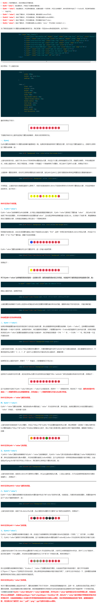
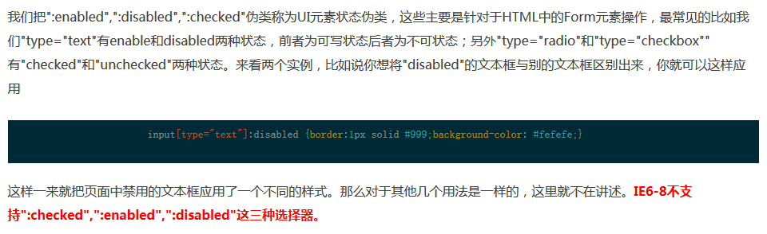
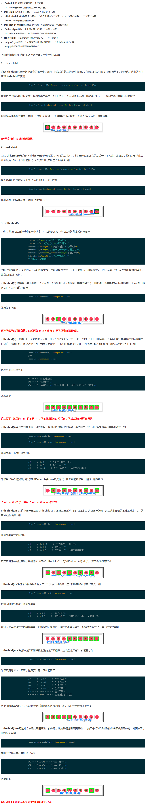
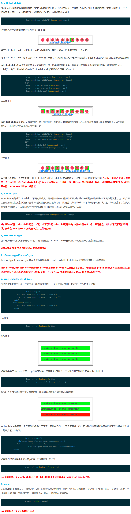
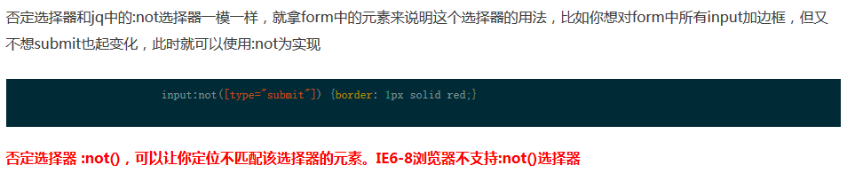
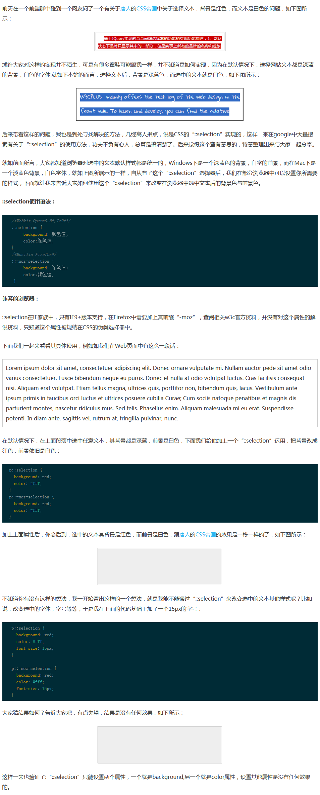
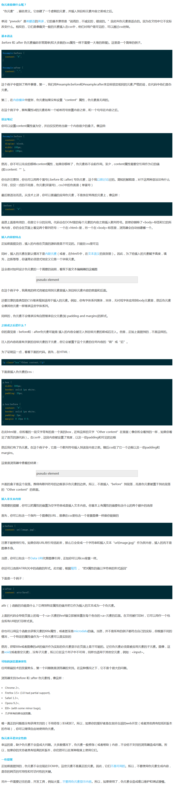
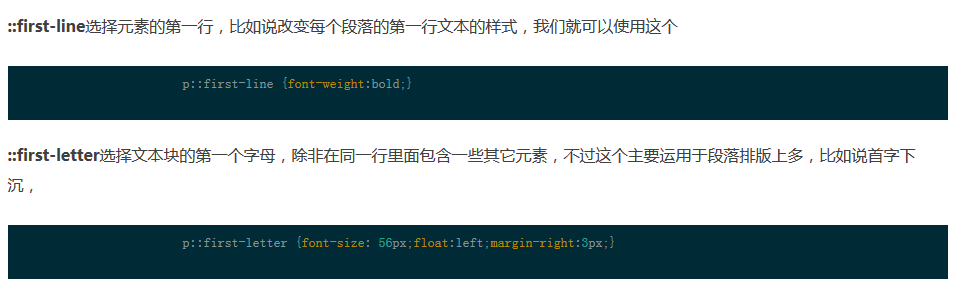
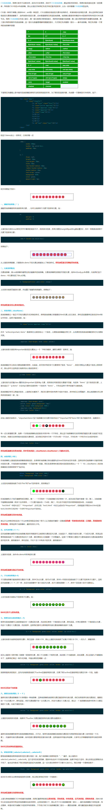

属性选择器

UI元素状态伪类

CSS3的:nth选择器


否定选择器（:not）

IE9+; chorme1.0; firefox1.7; safari3.2; opera9.5
ele:not([class~='iconfont']){}
div :not(p){}
ele:not(:link):not(:visited){}
::Selection

伪元素 :before和:after

::first-line和::first-letter

选择器类别
